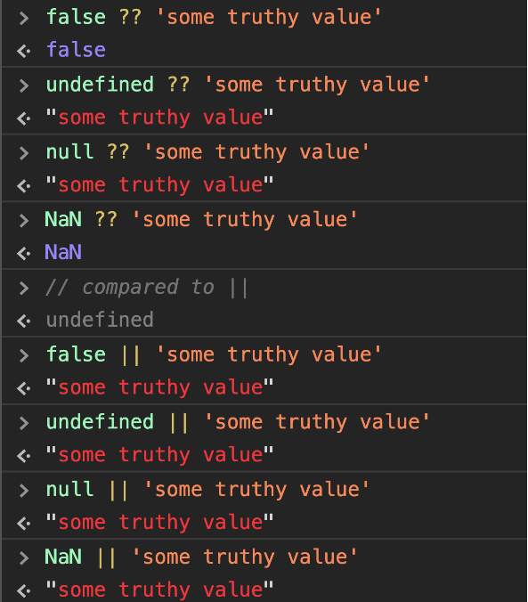

Array.prototype.includes() This feature introduces a more readable syntax for checking if an array contains an element
With ES6 and lower, to check if an array contained an element you had to use indexOf, which checks the index in the array, and returns -1 if the element is not there. Since -1 is evaluated as a true value
// below ECMAScript 2016
if (![1,2].indexOf(3)) {
console.log('Not found')
}
// ECMAScript 2016
if (![1,2].includes(3)) {
console.log('Not found')
}
The exponentiation operator ** is the equivalent of Math.pow(), but brought into the language instead of being a library function.
The ** operator is standardized across many languages including Python, Ruby, MATLAB, Lua, Perl and many others.
Math.pow(4, 2) === 4 ** 2
The purpose of string padding is to add characters to a string, so it reaches a specific length. ES2017 introduces two String methods: padStart() and padEnd().
padStart()
‘test’.padStart(4) ‘test’
‘test’.padStart(5) ‘ test’
‘test’.padStart(8) ‘ test’
‘test’.padStart(8, ‘abcd’) ‘abcdtest’
padEnd()
‘test’.padEnd(4) ‘test’
‘test’.padEnd(5) ‘test ‘
‘test’.padEnd(8) ‘test ‘
‘test’.padEnd(8, ‘abcd’) ‘testabcd’
This method returns an array containing all the object own property values.
Object.values() also works with arrays:
const person = { name: 'Fred', age: 87 }
Object.values(person) // ['Fred', 87]
const people = ['Fred', 'Tony']
Object.values(people) // ['Fred', 'Tony']
This method returns an array containing all the object own properties, as an array of [key, value] pairs.
Object.entries() also works with arrays:
const person = { name: 'Fred', age: 87 }
Object.entries(person) // [['name', 'Fred'], ['age', 87]]
const people = ['Fred', 'Tony']
Object.entries(people) // [['0', 'Fred'], ['1', 'Tony']]
This method returns all own (non-inherited) properties descriptors of an object.
Async functions are a combination of promises and generators to reduce the boilerplate around promises, and the “don’t break the chain” limitation of chaining promises.
When Promises were introduced in ES6, they were meant to solve a problem with asynchronous code, and they did, but over the 2 years that separated ES6 and ES2017, it was clear that promises could not be the final solution. Promises were introduced to solve the famous callback hell problem, but they introduced complexity on their own, and syntax complexity.
They were good primitives around which a better syntax could be exposed to the developers: enter async functions.
function doSomethingAsync() {
return new Promise((resolve) => {
setTimeout(() => resolve('I did something'), 3000)
})
}
async function doSomething() {
console.log(await doSomethingAsync())
}
console.log('Before')
doSomething()
console.log('After')
function promiseToDoSomething() {
return new Promise((resolve)=>{
setTimeout(() => resolve('I did something'), 10000)
})
}
async function watchOverSomeoneDoingSomething() {
const something = await promiseToDoSomething()
return something + ' and I watched'
}
async function watchOverSomeoneWatchingSomeoneDoingSomething() {
const something = await watchOverSomeoneDoingSomething()
return something + ' and I watched as well'
}
watchOverSomeoneWatchingSomeoneDoingSomething().then(res => console.log(res))
WebWorkers are used to create multithreaded programs in the browser.
They offer a messaging protocol via events. Since ES2017, you can create a shared memory array between web workers and their creator, using a SharedArrayBuffer
Since it’s unknown how much time writing to a shared memory portion takes to propagate, Atomics are a way to enforce that when reading a value, any kind of writing operation is completed.
ES6 introduced the concept of a rest element when working with array destructuring:
// ES2015
const numbers = [1, 2, 3, 4, 5]
[first, second, ...others] = numbers
const numbers = [1, 2, 3, 4, 5]
const sum = (a, b, c, d, e) => a + b + c + d + e
const sumOfNumbers = sum(...numbers)
// ES2018
const { first, second, ...others } = { first: 1, second: 2, third: 3, fourth: 4, fifth: 5 }
first // 1
second // 2
others // { third: 3, fourth: 4, fifth: 5 }
The new construct for-await-of allows you to use an async iterable object as the loop iteration
for await (const line of readLines(filePath)) {
console.log(line)
}
When a promise is fulfilled, successfully it calls the then() methods, one after another.
If something fails during this, the then() methods are jumped and the catch() method is executed.
finally() allow you to run some code regardless of the successful or not successful execution of the promise:
fetch('file.json')
.then(data => data.json())
.catch(error => console.error(error))
.finally(() => console.log('finished'))
flat() is a new array instance method that can create a one-dimensional array from a multidimensional array.
By default it only “flats” up to one level, but you can add a parameter to set the number of levels you want to flat the array to. Set it to Infinity to have unlimited levels:
['Dog', ['Sheep', 'Wolf']].flat() //[ 'Dog', 'Sheep', 'Wolf' ]
['Dog', ['Sheep', ['Wolf']]].flat(2) // [ 'Dog', 'Sheep', 'Wolf' ]
['Dog', ['Sheep', ['Wolf']]].flat(Infinity) // [ 'Dog', 'Sheep', 'Wolf' ]
flatMap() is a new Array instance method that combines flat() with map(). It’s useful when calling a function that returns an array in the map() callback, but you want your resulted array to be flat:
['My dog', 'is awesome'].map((words) => words.split(' ')) //[ [ 'My', 'dog' ], [ 'is', 'awesome' ] ]
['My dog', 'is awesome'].flatMap((words) => words.split(' ')) // [ 'My', 'dog', 'is', 'awesome' ]
Sometimes we dont need to have a parameter binded to the catch block of a try/catch.
Even if we never had to use e to analyze the error. We can now simply omit it:
try {
//...
} catch (e) {
//handle error
}
// ES25019
try {
//...
} catch {
//handle error
}
ES2019 introduces a new Object.fromEntries() method, which can create a new object from such array of properties:
const person = { name: 'Fred', age: 87 }
const entries = Object.entries(person)
const newPerson = Object.fromEntries(entries) // { name: 'Fred', age: 87 }
person !== newPerson //true
This feature has been part of v8/Chrome for almost a year now, and it’s going to be standardized in ES2019
trimStart() Return a new string with removed white space from the start of the original string
trimEnd() Return a new string with removed white space from the end of the original string
//trimStart
'Testing'.trimStart() //'Testing'
' Testing'.trimStart() //'Testing'
' Testing '.trimStart() //'Testing '
'Testing '.trimStart() //'Testing '
// trimEnd
'Testing'.trimEnd() //'Testing'
' Testing'.trimEnd() //' Testing'
' Testing '.trimEnd() //' Testing'
'Testing '.trimEnd() //'Testing'
You can now retrieve the description of a Symbol by accessing its description property instead of having to use the toString() method:
const testSymbol = Symbol('Test')
testSymbol.description // 'Test'
ES2019 introduced a change to the return value to avoid stripping comments and other characters like whitespace, exactly representing the function as it was defined
function /* this is bar */ bar() {}
// The behavior was this:
bar.toString() //'function bar() {}
// ES2019
bar.toString() // 'function /* this is bar */ bar () {}'
BigInt, one of the most anticipated features in JavaScript, is finally here. It actually allows developers to have much greater integer representation in their JS code for data processing for data handling.
However, you need to have an n appended at the very end of the number, as you can see above. This n denotes that this is a BigInt and should be treated differently by the JavaScript engine (by the v8 engine or whatever engine it is using).
Dynamic imports in JavaScript give you the option to import JS files dynamically as modules in your application natively.
if(myCondition) {
const module = await import('./app.js');
module.addNumber(3,4,5);
}
However, a lot of times you might want to check if a variable is nullish – that is if it is either undefined or null, like when it's okay for a variable to have an empty string, or even a false value.In that case, you'll use the new nullish coalescing operator, ??
Optional chaining syntax allows you to access deeply nested object properties without worrying if the property exists or not. If it exists, great! If not, undefined will be returned.
This is because it is window for browsers, global for Node, and self for web workers. If there are more runtimes, the global object will be different for them as well.
ES2020 brings us globalThis which always refers to the global object
globalThis.setTimeout === windwo.setTimeout // true
jQuery is a fast, small, and feature-rich JavaScript library. It makes things like HTML document traversal and manipulation, event handling, animation, and Ajax much simpler with an easy-to-use API that works across a multitude of browsers. With a combination of versatility and extensibility, jQuery has changed the way that millions of people write JavaScript.
The jQuery library is a single JavaScript file, and you reference it with the HTML < script> tag (notice that the < script> tag should be inside the < head> section):
< head>
< script src="jquery-3.5.1.min.js">< /script>
< /head>
// google cdn
< head>
< script src="https://ajax.googleapis.com/ajax/libs/jquery/3.5.1/jquery.min.js">< /script>
< /head>
$( "button.continue" ).html( "Next Step..." )
const hiddenBox = $( "#banner-message" );
$( "#button-container button" ).on( "click", function( event ) {
hiddenBox.show();
});
$.ajax({
url: "/api/getWeather",
data: {
zipcode: 97201
},
success: function( result ) {
$( "#weather-temp" ).html( "< strong>" + result + "< /strong> degrees" );
}
});
$("p") // select all < p> elements on a page
$(document).ready(function(){
$("button").click(function(){
$("p").hide();
});
});
$("#test") // like document.getElementById
$(".test") // .class Selector
$("button").click(function(){
$(".test").hide();
});
$("p").click();
$("p").click(function(){
// action goes here!!
});
$("#hide").click(function(){
$("p").hide();
});
$("#show").click(function(){
$("p").show();
$("p").hide(1000);
$("p").hide("slow", function(){
alert("The paragraph is now hidden");
});
});
$("#p1").css("color", "red").slideUp(2000).slideDown(2000);
$("#btn1").click(function(){
alert("Text: " + $("#test").text());
});
$("#btn2").click(function(){
alert("HTML: " + $("#test").html());
alert("Value: " + $("#test").val());
$("#test3").val("Dolly Duck"); // set value
});
$("p").append("Some appended text.");
$("p").prepend("Some prepended text.");
$("#div1").remove();
$("#div1").empty(); // removes the child elements of the selected element(s).
$("button").click(function(){
$("h1, h2, p").addClass("blue");
$("div").addClass("important");
});
$("p").css("background-color", "yellow");
$("p").css({"background-color": "yellow", "font-size": "200%"});
$("button").click(function(){
$("#div1").width();
$("#div1").height();
$("#div1").innerHeight()
$("#div1").innerWidth()
});
$("span").parent();
$("span").parents();
$("span").parents("ul");
$("span").parentsUntil("div");
$("div").children();
$("div").children("p.first")
$("h2").siblings();
$("h2").siblings("p");
$("h2").next();
$("h2").nextAll();
$("h2").nextUntil("h6");
$("div").first();
$("div").last();
// The eq() method returns an element with a specific index number of the selected elements.
$("p").eq(1)
$("p").filter(".intro");
$("p").not(".intro");
$("button").click(function(){
$.get("demo_test.asp", function(data, status){
alert("Data: " + data + "\nStatus: " + status);
});
});
$("button").click(function(){
$.post("demo_test_post.asp",
{name: "Donald Duck",city: "Duckburg"},
function(data, status){
alert("Data: " + data + "\nStatus: " + status);
});
});
$("#div1").load("demo_test.txt");